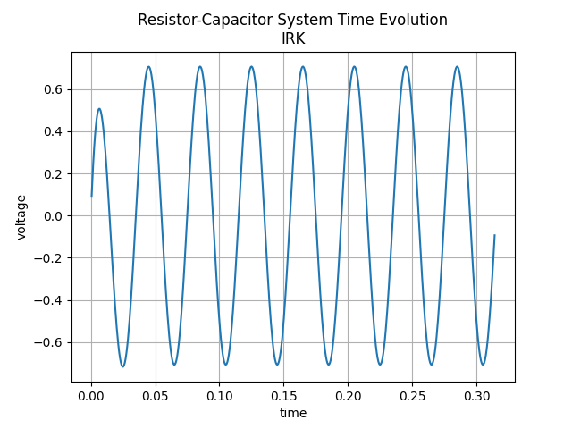
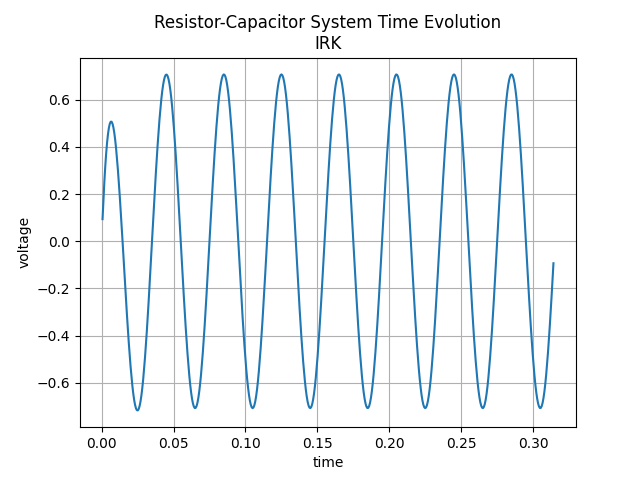

Runge-Kutta Methods#
Runge-Kutta (RK) methods are a family of one-step time integration schemes that achieve higher order accuracy by combining multiple evaluations (“stages”) of the right-hand side. This project covers an explicit and an implicit Runge-Kutta solver.
Mathematical Overview#
Recall the integral formulation of the ODE on time interval \([t_i, t_{i+1}]\):
Runge-Kutta methods obtain higher accuracy by approximating this integral with a quadrature rule:
where
\(s\) is the number of stages,
\(c_j, b_j\) are nodes and weights of a quadrature rule on \([0,1]\),
\(y_i^j \approx y(t_i + c_j\tau)\) are the (unknown) stage values.
Stage values are defined by a second quadrature on \([0,c_j]\) (skipping the index \(i\)):
A particular RK method is defined by the coefficients \((A,b,c)\), typically given by the Butcher tableau
Instead of solving for the stage values \(y^j\), many implementations solve for stage slopes \(k^j\):
and update
Explicit RK methods#
For explicit RK methods, \(A\) is strictly lower triangular (\(a_{jl}=0\) for \(l\ge j\)). This makes the stages sequential: \(k^0\) can be computed first, then \(k^1\), and so on.
Implementation: ExplicitRungeKutta#
The class ExplicitRungeKutta derives from TimeStepper and takes a right-hand side NonlinearFunction plus a Butcher tableau \((A,b,c)\).
Key design points in the implementation:
Dimension checks: it requires
dimX == dimF(ODE system \(y' = f(y)\) with matching input/output dimension).Explicitness check: it validates that \(A\) is strictly lower triangular (up to a small tolerance).
Stage storage: all stage vectors \(k^j\in\mathbb{R}^n\) are stored contiguously in a single vector
m_kof length \(s\,n\); stage \(j\) is accessed viam_k.range(j*n, (j+1)*n).
Algorithmically, each step computes
and finally applies
The implementation mirrors this directly: for each stage \(i\) it forms a temporary vector m_y_tmp and evaluates the RHS into the stage slice.
Convenience tableau: classical RK4#
The helper ERK_RK4_Tableau() returns the classical 4th order explicit RK coefficients \((A,b,c)\):
Usage pattern:
auto rhs = /* std::shared_ptr<NonlinearFunction> */;
auto [A, b, c] = ASC_ode::ERK_RK4_Tableau();
ASC_ode::ExplicitRungeKutta stepper(rhs, A, b, c);
stepper.doStep(tau, y);
Implicit Runge-Kutta methods#
Implicit RK methods use a general matrix \(A\) and therefore require solving a coupled nonlinear system for the stage slopes \((k^0,\ldots,k^{s-1})\).
Gaussian collocation methods (Gauss-Legendre) are a common choice for high order accuracy; Radau IIA variants enforce a node at \(c_{s-1}=1\) and are often preferred for stiff problems due to better damping (L-stability).
Implementation: ImplicitRungeKutta#
The class ImplicitRungeKutta also derives from TimeStepper, but it builds a nonlinear equation in \(k\in\mathbb{R}^{sn}\) and solves it with the library Newton solver.
The coupled system is
where
\(k=(k^0,\ldots,k^{s-1})\) with each \(k^j\in\mathbb{R}^n\),
\(\tilde y_i=(y_i,\ldots,y_i)\in\mathbb{R}^{sn}\) is the stacked current state,
\(\widetilde f(x_0,\ldots,x_{s-1})=(f(x_0),\ldots,f(x_{s-1}))\) applies the RHS stage-wise,
\(A\otimes\) is the block operator that mixes stage vectors using the RK matrix \(A\).
In code, the constructor composes this equation from reusable NonlinearFunction building blocks:
MultipleFunc(rhs, s)implements \(\widetilde f\).ConstantFunction(sn)holds \(\tilde y_i\) (updated each step).Parameterstores the current step size \(\tau\).MatVecFunc(A, n)implements \(A\otimes\) on a stacked stage vector.IdentityFunction(sn)represents the unknown \(k\) (so the final equation has the form “identity minus something”).
During doStep(tau, y) the implementation:
Stacks the current state \(y\) into \(\tilde y_i\) and stores it in the constant function.
Sets the parameter \(\tau\).
Solves for
m_kwithNewtonSolver(m_equ, m_k)(initial guessm_k = 0).Updates \(y \leftarrow y + \tau\sum_j b_j k^j\).
Built-in tableaus in implicitRK.hpp#
The header provides example nodes/weights:
Gauss-Legendre 2-stage:
Gauss2a,Gauss2b,Gauss2c.Gauss-Legendre 3 nodes:
Gauss3c(nodes only; see the coefficient generation below).
If you include these headers in multiple translation units, prefer making such global objects inline to avoid ODR/linker issues.
Computing tableaus from nodes (arbitrary order)#
The helper computeABfromC(c) constructs \((A,b)\) from a chosen node vector \(c\) by enforcing polynomial exactness up to degree \(s-1\).
It builds a Vandermonde-like matrix
and solves the moment conditions
and for each stage \(j\):
In the implementation, the inverse of \(M\) is computed (via calcInverse) and then used to form \(b\) and each row of \(A\).
Quadrature helpers for Gauss / Radau nodes#
The file implicitRK.hpp includes routines from Numerical Recipes to generate nodes and weights:
GaussLegendre(x, w)for Gauss-Legendre nodes on \([0,1]\).GaussJacobi(x, w, alf, bet)for Gauss-Jacobi nodes (used to generate Radau nodes).GaussRadau(x, w)which computes Radau nodes on \([0,1]\) by callingGaussJacobiwith parameters \((\alpha,\beta)=(1,0)\) and then appending the endpoint \(1\).
These utilities let you generate \(c\) (and optionally weights) and then use computeABfromC(c) to build the full tableau.
How can you use this implementation?#
As for the other time-steppers, you create a right-hand side object (derived from NonlinearFunction), construct the stepper, and call doStep(tau, y) in a loop.
Explicit RK (example: RK4)#
Explicit RK methods only need RHS evaluations evaluate(y, f).
#include <explicitRK.hpp>
using namespace ASC_ode;
auto rhs = std::make_shared<MassSpring>(1.0, 1.0);
auto [A, b, c] = ERK_RK4_Tableau();
ExplicitRungeKutta stepper(rhs, A, b, c);
for (int i = 0; i < steps; i++)
{
stepper.doStep(tau, y);
outfile << (i+1) * tau << " " << y(0) << " " << y(1) << std::endl;
}
Implicit RK (example: Gauss-Legendre 2)#
Implicit RK methods solve a nonlinear system in each step using NewtonSolver. For good performance and robustness, your RHS should provide a Jacobian (either by implementing evaluateDeriv or by using the AutoDiff adapter discussed on the previous page).
#include <implicitRK.hpp>
using namespace ASC_ode;
auto [Gauss3a,Gauss3b] = computeABfromC (Gauss3c); // Gauss3c is predefined in implicitRK.hpp
auto rhs = std::make_shared<MassSpring>(1.0, 1.0);
ImplicitRungeKutta stepper(rhs, Gauss3a, Gauss3b, Gauss3c);
for (int i = 0; i < steps; ++i)
{
stepper.doStep(tau, y);
outfile << (i+1) * tau << " " << y(0) << " " << y(1) << std::endl;
}
If you want a different implicit method, generate nodes \(c\) (e.g. using GaussLegendre or GaussRadau), compute (A,b) via computeABfromC(c), and then construct ImplicitRungeKutta(rhs, A, b, c).
Plots of mass-spring system and RC circuit#
Explicit Runge-Kutta (RK4)#


Implicit Runge-Kutta (Gauss-Legendre 2)#
 

{kind=link}